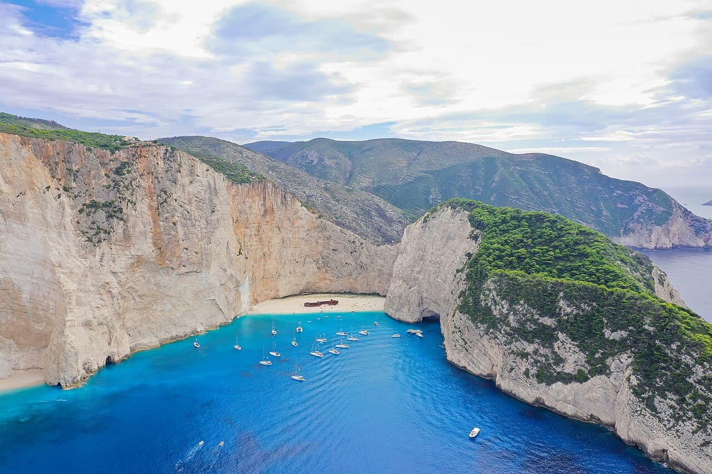

Navagio
Zakynthos, Grèce · baignade, snorkeling, kayak

Crique de l'épave, accessible uniquement par bateau, encadrée de falaises blanches et d'une eau bleu électrique.
- Lieu
- Zakynthos, Grèce
- Niveau
- Intermédiaire
- Activités
- baignade, snorkeling, kayak
- Type d'eau
- Mer / océan
- Coordonnées
- 37.86, 20.63 (position approximative du secteur)
Dangers à connaître
- Chutes de pierres au pied de la falaise.
- Accès bateau, mer parfois agitée.
Le conseil d'Ocean Buddy
Pars tôt : l'après-midi la crique est bondée.
Ouvrir dans Ocean Buddy Télécharger sur l'App Store
Source : Description historique Ocean Buddy · vérification externe en attente.